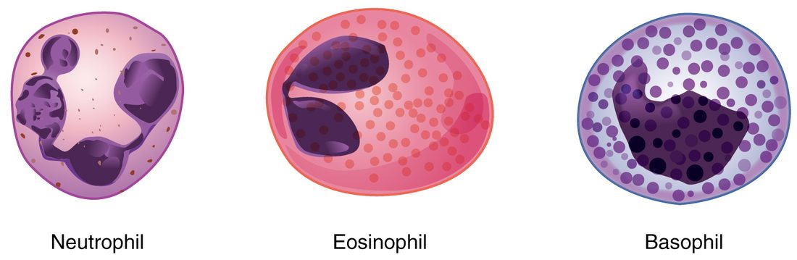
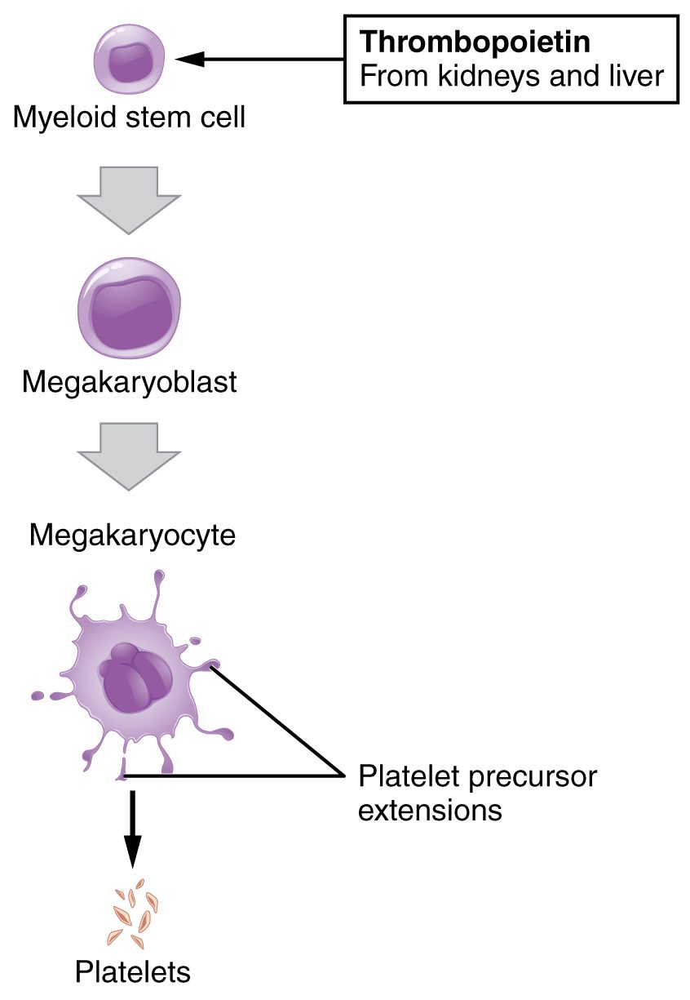

White blood cells are only about one in every thousand blood cells, yet they are the cells that find and destroy invading microbes, clear away debris and, when they go wrong, cause leukemia. This page covers the five types of white blood cells and their functions, how to tell them apart on a stained blood smear, what antigens and antibodies are, how to read a white cell count and differential, what leukemia and lymphoma are, and how platelets are made and built.
Leukocytes: what all white blood cells share
When a splinter carries bacteria into your finger, the first cells to arrive, within an hour, are not skin cells. They are white blood cells that were drifting through the capillaries of your finger, crawled out through the vessel wall and moved toward the injury. That behavior is typical of the group.
A leukocyte (leuk- = white, -cyte = cell) is a white blood cell. Unlike red blood cells, leukocytes:
- Keep their nucleus and organelles. They can make proteins, divide (some of them) and respond to signals.
- Do most of their work outside the blood. The blood is their highway. Leukocytes slow down and stick to the walls of capillaries and small veins near damaged or infected tissue, squeeze between the cells of the wall, and crawl through the tissue toward chemical signals released there.
- Are few. About 4,500–11,000 per µL of blood, against about 5 million red cells.
Leukocytes are sorted by what a stained blood smear shows in their cytoplasm. Blood smears are usually stained with a mixture of an acidic red-orange dye (eosin) and basic blue-purple dyes. Three kinds of leukocyte have obvious stained granules: the granulocytes, or granular leukocytes. Two kinds have no visible granules: the agranulocytes, or agranular leukocytes. (Agranulocytes do have a few very small granules, lysosomes, but they are too small to see with a light microscope.)
| Neutrophil | Eosinophil | Basophil | Lymphocyte | Monocyte | |
|---|---|---|---|---|---|
| Group | Granulocyte | Granulocyte | Granulocyte | Agranulocyte | Agranulocyte |
| Share of white cells | 50–70% | 1–4% | 0.5–1% | 20–40% | 2–8% |
| Size | 10–12 µm | 10–14 µm | 10–12 µm | 6–14 µm | 12–20 µm, the largest |
| Nucleus | 3–5 lobes joined by thin strands | 2 lobes | 2 lobes, hidden by granules | Large, round, almost filling the cell | Kidney or horseshoe shaped |
| Granules | Small, faint lilac | Large, red-orange | Large, dark blue-purple | None visible | None visible |
| Main job | Engulf and kill bacteria | Attack parasitic worms; modulate allergic reactions | Release histamine in allergic and inflammatory reactions | Specific immune defense | Leave the blood and become macrophages |
| Rises in | Bacterial infections | Parasitic worm infections, allergies | Some leukemias (rarely otherwise) | Viral infections | Long-lasting infections |
A common memory aid for their order of abundance, most to least, is "Never Let Monkeys Eat Bananas": neutrophils, lymphocytes, monocytes, eosinophils, basophils.
Granulocytes
All three granulocytes come from the myeloid branch of hematopoiesis, through a precursor called a myeloblast. Figure 1 shows them side by side.

Neutrophils
Neutrophils (neutr- = neither, -phil = loving: their granules take up neither dye strongly) are the most numerous leukocytes and the first to arrive at a bacterial infection. Their nucleus has three to five lobes joined by thin strands, so they are also called polymorphonuclear leukocytes (poly- = many, morph- = shape): the nucleus seems to take many shapes.
- A neutrophil engulfs bacteria by phagocytosis and fuses the resulting vesicle with its granules, which are lysosomes full of digestive enzymes and bacteria-killing proteins.
- It also makes a burst of toxic oxygen compounds, including the same chemical as household bleach, that kill what it has swallowed.
- Neutrophils are short-lived: they circulate for less than a day and survive a day or two in the tissues. The creamy pus in an infected wound is mostly dead neutrophils, dead bacteria and debris.
In a serious bacterial infection the marrow releases neutrophils early, before their nucleus has finished lobing. These young band cells, with a curved, unsegmented nucleus, rise on the blood count and are a clue to infection.
Eosinophils
Eosinophils (eosin, the red-orange dye, + -phil) have a two-lobed nucleus and large granules that stain red-orange. Their main targets are parasitic worms, which are far too large to engulf. Eosinophils attach to a worm's surface and release toxic proteins from their granules onto it. They also gather at sites of allergic reactions, where they both add to the inflammation and help limit it. Their count rises in worm infections and in allergic conditions.
Basophils
Basophils (bas- = base, + -phil: their granules take up the basic, blue-purple dye) are the rarest leukocytes. Their large, dark granules often hide the two-lobed nucleus. The granules hold histamine, which widens blood vessels and makes them leaky, and a substance that stops blood clotting. When basophils release them, fluid and more leukocytes move into the tissue: part of an inflammatory or allergic reaction. Basophils work much like the mast cells you met in tissue repair, which sit in the tissues rather than the blood.
Agranulocytes
Lymphocytes
Lymphocytes are the second most common leukocytes in blood, but most of your lymphocytes are not in the blood at all. They live in the lymph nodes, the spleen and similar tissue, and pass back and forth through the blood. Under the microscope a lymphocyte is a round cell almost filled by a large, dark nucleus, with only a thin rim of pale blue cytoplasm (Figure 2). Small lymphocytes are barely larger than a red cell; large ones are about twice as wide.
Lymphocytes come from the lymphoid branch of hematopoiesis. Most of them are the cells of specific immunity, which recognizes one particular target at a time. There are three main kinds, which look alike on a smear:
- one kind matures into cells that release antibodies (see the next section);
- a second kind recognizes and kills infected or cancerous body cells directly, and directs other immune cells;
- a third kind kills infected and cancerous cells without needing to have met them before.
You will meet each by name in the immune chapter. Some lymphocytes live for months or years, which is how your immune system remembers infections it has already fought.
Monocytes
Monocytes (mono- = one: one unlobed nucleus) are the largest leukocytes, with a kidney- or horseshoe-shaped nucleus and plenty of pale gray-blue cytoplasm. They come from the myeloid branch, through a monoblast. A monocyte circulates for a day or three, then leaves the blood and becomes a macrophage, the large phagocyte you met in connective tissue.
Macrophages engulf bacteria, dead and dying cells, old red blood cells and debris. Unlike neutrophils, they can survive for months and keep eating. They arrive at an infection later than neutrophils and dominate once an infection lasts, which is why monocytes rise in long-lasting infections.
Antigens and antibodies: a first look
A lymphocyte does not attack "anything foreign". It recognizes one particular molecular shape. That shape is its antigen.
- An antigen (originally "antibody generator": anti(body) + -gen = producing) is any molecule that the immune system recognizes as a specific target. Most antigens are proteins or the sugar chains of glycoproteins, often on a surface: the coat of a bacterium or virus, or the glycocalyx of a cell. Your own cells carry antigens too, which your immune system normally learns to leave alone.
- An antibody is a Y-shaped protein, one of the gamma globulins in plasma. It is released by cells descended from one kind of lymphocyte. The tips of each arm of the Y fit one antigen's shape the way a key fits one lock.
When antibodies bind antigens on a microbe, they coat it, which makes it easier for neutrophils and macrophages to engulf. Because each antibody has two or more binding sites, it can also link antigens on neighboring cells and clump them together. You will use that clumping at the end of this chapter, when you match blood for transfusion. The full story of how lymphocytes recognize antigens and make antibodies is taught in the immune chapter.
White cell counts
A complete blood count reports the total white cell count and, with a differential, the share of each of the five types.
- A differential count gives the percentage of each leukocyte type, from a stained smear or an automated counter. Multiplying a percentage by the total count gives that type's absolute count.
- Leukocytosis (-osis = condition, here an increase) is a white cell count above about 11,000 per µL. Common causes are infection, inflammation, physical stress, cortisol-like drugs and leukemia.
- Leukopenia (-penia = shortage) is a count below about 4,500 per µL. Common causes are chemotherapy, radiation, some viral infections, some drugs and marrow failure. A low neutrophil count is the dangerous part, because neutrophils are the first defense against bacteria.
Worked example 1: absolute neutrophil count
Problem. Ten days after chemotherapy, a patient's total white cell count is 2,000 per µL, and 20% of those cells are neutrophils. What is her absolute neutrophil count, and should she be protected from infection?
- Write the rule. Absolute count = total white cell count × fraction of that type.
- Convert the percentage. 20% = 0.20.
- Multiply. 2,000 × 0.20 = 400 neutrophils per µL.
- Compare with normal. A normal count is roughly 1,800–7,700 per µL. Below 500 per µL, the risk of a serious bacterial infection is very high.
Answer. 400 per µL: severe neutropenia. She needs precautions against infection, and a colony-stimulating factor may be given to speed her marrow's recovery.
Worked example 2: reading a differential
Problem. A man with a fever and a cough has a white cell count of 16,000 per µL: neutrophils 85%, lymphocytes 10%, monocytes 4%, eosinophils 1%, basophils 0%. What pattern is this?
- Total. 16,000 is above 11,000: leukocytosis.
- Absolute neutrophils. 16,000 × 0.85 = 13,600 per µL, well above the normal top of about 7,700.
- Absolute lymphocytes. 16,000 × 0.10 = 1,600 per µL, which is within the normal range, even though 10% looks low. The percentage fell only because neutrophils rose so much.
Answer. Leukocytosis from a rise in neutrophils, the typical pattern of a bacterial infection. Always check absolute counts before calling a type high or low.
Leukemia and lymphoma
Leukemia (leuk- = white, -emia = blood condition) is cancer of the blood-forming cells in the bone marrow. One precursor cell acquires mutations and divides without control, and its descendants never mature properly. The chain of events explains the symptoms:
- Leukemic cells fill the marrow and spill into the blood, so the white count is often very high.
- They crowd out normal hematopoiesis. Too few red cells cause anemia and fatigue; too few platelets cause easy bruising and bleeding.
- Although there are many white cells, few of them work, so infections are common.
Leukemias are named by two features: which branch the cancer came from (myeloid or lymphoid, often written lymphocytic or lymphoblastic) and how fast it runs. Acute leukemias are made of immature blast cells and progress over weeks; chronic leukemias are made of more mature-looking cells and progress over years. That gives four main types. Acute lymphoblastic leukemia is the most common cancer of childhood, and most children with it are now cured. Chronic lymphocytic leukemia is the most common leukemia in older adults in many countries.
Lymphoma (-oma = tumor) is cancer of lymphocytes that grows mainly as solid tumors in lymph nodes and similar tissue, rather than in the marrow and blood. It usually shows up as painless, swollen lymph nodes, sometimes with fever, night sweats and weight loss. The two main groups are Hodgkin lymphoma and non-Hodgkin lymphomas.
| Leukemia | Lymphoma | |
|---|---|---|
| Cells that become cancerous | Blood-forming cells of either branch | Lymphocytes |
| Where it mainly grows | Bone marrow and blood | Lymph nodes and similar tissue |
| Typical first signs | Fatigue, bruising, infections; abnormal blood count | Painless swollen lymph nodes |
| White count in blood | Often very high, with abnormal cells | Often normal |
Platelets
A platelet (little plate), also called a thrombocyte (thromb- = clot, -cyte = cell), is not a whole cell. It is a fragment of a megakaryocyte, the giant marrow cell you met in blood composition (Figure 3).

How platelets are made
Thrombopoietin, made mainly by the liver, drives myeloid stem cells toward the megakaryocyte line. A megakaryocyte copies its DNA many times without dividing, grows huge, then pushes long arms of cytoplasm through the wall of a marrow blood vessel. The flowing blood breaks the arms into fragments, and each megakaryocyte yields thousands of platelets.
What a platelet contains
- No nucleus, so a platelet cannot divide or make new RNA. It can still make a few proteins from RNA left by the megakaryocyte, but it cannot renew itself. It lives about 7–10 days, then is removed by macrophages in the spleen and liver.
- Granules holding substances it releases when activated: ADP, serotonin and calcium ions, which recruit more platelets and help clotting; clotting proteins, including fibrinogen; and growth factors that help repair damaged vessel walls.
- Actin and myosin, the contractile proteins, which let an activated platelet change shape and later pull on whatever it is attached to.
- Mitochondria and receptor proteins on its surface that bind collagen and signaling molecules.
A normal platelet count is about 150,000–450,000 per µL. At any moment about a third of your platelets are held in the spleen, so a greatly enlarged spleen can lower the count in the blood.
What platelets do
In an intact vessel, platelets drift past the smooth lining without sticking. When a vessel wall is torn, collagen beneath the lining is exposed. Platelets stick to it, change shape, release their granules and draw in more platelets, sealing small breaks. Their surface also gives clotting proteins a place to work. The next topic follows that process step by step.
When platelets are too few, small vessels leak: easy bruising, nosebleeds, bleeding gums, and tiny red-purple pinpoint spots in the skin (petechiae) where single capillaries have bled.